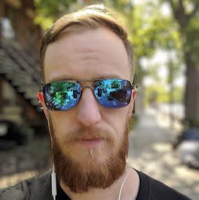

Project Manager · AI & Operations Specialist
Montreal, Quebec · Originally from Michigan
From tracking Iranian military communications 30,000 feet above ground to building AI systems that recover millions in lost revenue — my career has always been about one thing: finding signal in noise and turning it into action.
I spent six years in the US Air Force as an airborne intelligence analyst, flying combat missions and producing reports that reached national-level policymakers. The work demanded precision, speed, and the ability to synthesise complex, ambiguous information under pressure. It also gave me a deep respect for process — and for what happens when processes break down.
After the military, I transitioned into the tech sector and quickly found my footing in risk operations. At Hopper, I realised that the same analytical instincts I'd used to identify military patterns applied perfectly to fraud detection — I helped uncover a coordinated fraud ring and prevented over $200K in losses. At Super.com, I've taken that foundation and scaled it dramatically, growing our dispute operations from 4,500 to over 66,000 annual chargebacks while recovering $6.8M+ in revenue in 2025 alone.
Today I lead a team of analysts and manage complex cross-functional projects — from AI and RPA tool rollouts to OKR-driven initiatives — all while staying close to the data and the operational realities that make or break results. I live in Montreal with its mix of French and English, and I genuinely love the problem-solving culture of the city.
Six years of military intelligence work built an obsession with accuracy. I don't guess — I verify.
Comfortable in BigQuery, SQL, and Google Sheets. I build dashboards and tools that make data accessible to everyone on the team.
Hands-on experience implementing Luminai, Automat, and AI-assisted dispute workflows at scale. I've seen what works and what doesn't.
Four languages and a career bridging military, government, and startup environments means I can translate across teams fluently.
Startup experience means I bias toward shipping. I build MVPs, measure them, and iterate — not the other way around.
I bring Agile discipline to projects without the overhead. Clear OKRs, documented processes, and weekly momentum.
Whether you're looking to collaborate, hire, or just geek out about chargeback operations and AI — I'd love to hear from you.